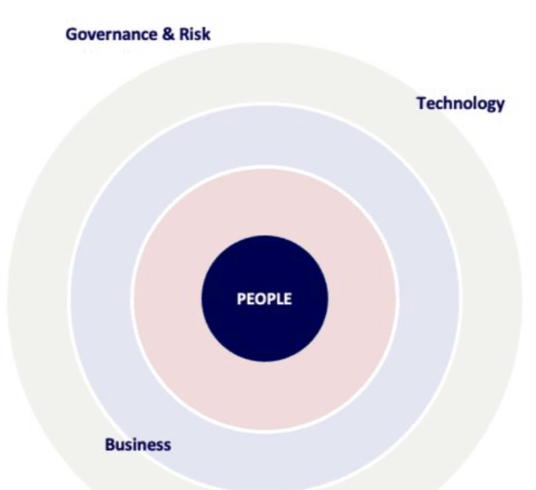
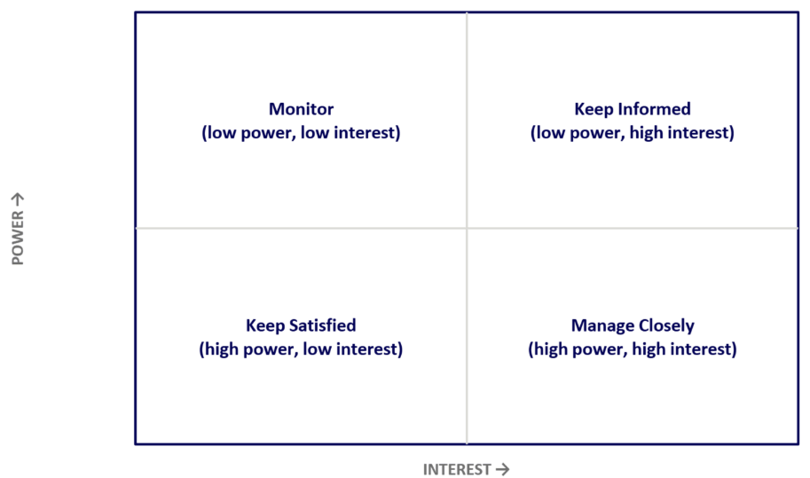
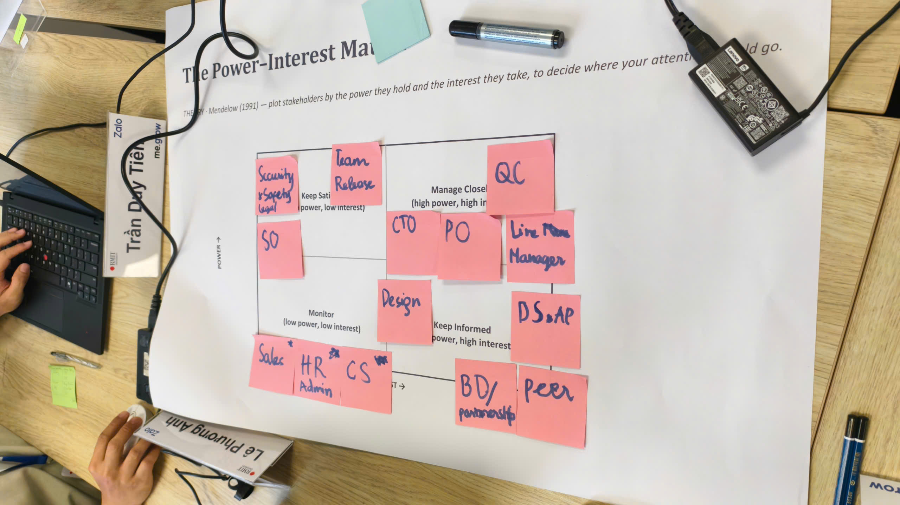
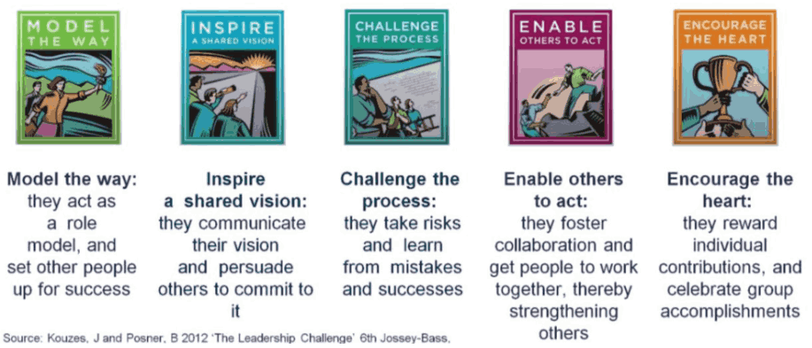
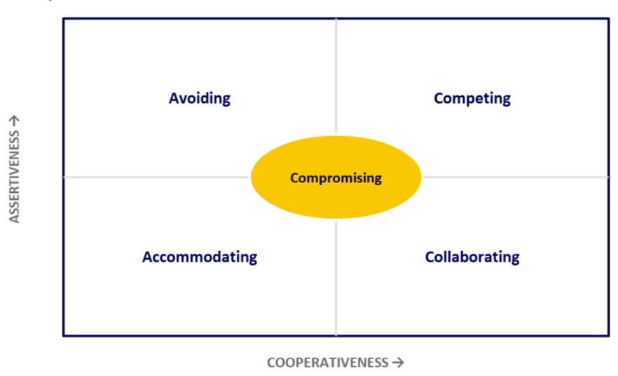

Chủ đề 12: Ảnh hưởng đến các bên liên quan & Lãnh đạo trong lĩnh vực công nghệ
Day 7 · Stakeholder Influence & Leadership in Technology — bản đối chiếu Anh – Việt
GS. Seng Kiat Kok · 41 slide
Quy ước của bản dịch. Mỗi slide là một khối: cột bên trái là nguyên văn tiếng Anh (màu xám), cột bên phải là bản tiếng Việt (màu đen). Nội dung được dịch sát theo từng slide, không lược bỏ. Chữ nằm trong hình đồ hoạ của slide cũng được dịch. Dòng chân trang lặp lại trên các slide (“RMIT Vietnam · Stakeholder Influence & Leadership in Technology”) không nhắc lại. Số slide theo thứ tự trang của file PDF.
Phần mô tả hình ảnh và các ghi chú về slide gốc được ghi bằng chữ nghiêng màu xám. Các khung “Giải thích thêm” là phần tóm tắt, giải thích bằng tiếng Việt do bản dịch bổ sung, không có trên slide gốc.
Tên riêng, tên mô hình và trích dẫn nguồn giữ nguyên. Stakeholder là “bên liên quan”; Power–Interest Matrix là “Ma trận Quyền lực – Mức quan tâm”; influence without authority là “ảnh hưởng không cần quyền hạn”; guiding coalition là “liên minh dẫn dắt”. Năm nhóm trong Bản đồ liên minh: Champions – “Người ủng hộ tích cực”, Influencers – “Người có ảnh hưởng”, Decision Makers – “Người ra quyết định”, Blockers – “Người cản trở”, Undecided – “Người chưa quyết định”. Từ coaching và worksheet giữ nguyên.
Stakeholder Influence & Leadership in Technology
Ảnh hưởng đến các bên liên quan & Lãnh đạo trong lĩnh vực công nghệ
Prof. Seng Kiat Kok
GS. Seng Kiat Kok
Slide bìa có logo RMIT, chương trình me.grow và Zalo.
Day at a Glance — One Day. Seven Focus Areas
Tổng quan ngày học — Một ngày. Bảy trọng tâm
- Read the Stakeholder Landscape
- Build Trust & Leadership Credibility
- Influence Without Authority
- Đọc bức tranh các bên liên quan
- Xây dựng niềm tin & uy tín lãnh đạo
- Ảnh hưởng không cần quyền hạn
- Understand the Sources of Power
- Influence Without Authority (Exchange)
- Conflict → Alignment
- Leading Change Through Coalitions
- Hiểu các nguồn quyền lực
- Ảnh hưởng không cần quyền hạn (Trao đổi)
- Xung đột → Đồng thuận
- Dẫn dắt thay đổi thông qua liên minh
By the End of the Day, You Can Say:
Cuối ngày hôm nay, bạn có thể nói:
I understand who has influence, what they care about and where the risks are.
Tôi biết ai có ảnh hưởng, họ quan tâm điều gì và rủi ro nằm ở đâu.
I can adapt my approach based on trust, power, motivation and the nature of the relationship.
Tôi có thể điều chỉnh cách tiếp cận dựa trên niềm tin, quyền lực, động lực và bản chất của mối quan hệ.
I have a practical 90-day stakeholder strategy linked to a real technology initiative.
Tôi có một chiến lược thực tế 90 ngày với các bên liên quan, gắn với một sáng kiến công nghệ thực tế.
Core Question
Câu hỏi cốt lõi
The Day in One Framework
Cả ngày học trong một khung
Sáu giai đoạn được trình bày thành sáu ô màu nối tiếp nhau.
AM — Understand the Landscape, Build Credibility
Buổi sáng — Hiểu bức tranh tổng thể, Xây dựng uy tín
Theory 1 · Freeman (1984) — Stakeholder Theory
Lý thuyết 1 · Freeman (1984) — Lý thuyết các bên liên quan

| Pros · Ưu điểm | Cons / Limitations · Hạn chế |
| Broadens thinking beyond formal organisational structures Mở rộng tư duy ra ngoài cấu trúc tổ chức chính thức | Can create a very large stakeholder population Có thể tạo ra một số lượng bên liên quan rất lớn |
| Highlights competing interests and dependencies Làm rõ các lợi ích cạnh tranh và sự phụ thuộc lẫn nhau | Does not automatically tell leaders which stakeholder matters most Không tự động cho lãnh đạo biết bên liên quan nào quan trọng nhất |
| Useful for complex transformation environments Hữu ích trong môi trường chuyển đổi phức tạp | Stakeholder interests can conflict Lợi ích của các bên liên quan có thể mâu thuẫn |
| Encourages consideration of external stakeholders Khuyến khích quan tâm đến các bên liên quan bên ngoài | Can lead to excessive consultation Có thể dẫn đến tham vấn quá mức |
| Strong foundation for stakeholder mapping Nền tảng vững chắc để lập bản đồ các bên liên quan | Requires judgement about whose interests should take priority Đòi hỏi phán đoán về việc lợi ích của ai cần được ưu tiên |
Nguồn: Freeman, R. E. (1984). Strategic Management: A Stakeholder Approach. Pitman.
Theory 2 · Mendelow (1991) — The Power–Interest Matrix
Lý thuyết 2 · Mendelow (1991) — Ma trận Quyền lực – Mức quan tâm

Giải thích thêm
Ma trận chia các bên liên quan thành bốn nhóm để phân bổ thời gian: nhóm quyền lực cao, quan tâm cao cần gặp gỡ và tham vấn thường xuyên; nhóm quyền lực cao, quan tâm thấp cần được đáp ứng đủ để không trở thành trở ngại; nhóm quyền lực thấp, quan tâm cao cần được cập nhật đều đặn; nhóm còn lại chỉ cần theo dõi.
Trên slide gốc, hai ô “quyền lực cao” nằm ở hàng dưới dù mũi tên trục POWER hướng lên. Khi tự vẽ ma trận trên worksheet, nên đặt nhóm quyền lực cao ở nửa trên cho khớp với trục.
Morning · Session 1 — Tasks to Mapping Stakeholders
Buổi sáng · Phần 1 — Các bước lập bản đồ các bên liên quan
Visualise everyone with a stake — business, technology, governance, risk, people — beyond the formal org chart.
Hình dung tất cả những ai có liên quan (kinh doanh, công nghệ, quản trị, rủi ro, con người) vượt ra ngoài sơ đồ tổ chức chính thức.
Plot each stakeholder to decide who to manage closely, keep satisfied, keep informed, or simply monitor.
Đặt từng bên liên quan lên ma trận để quyết định ai cần quản lý chặt chẽ, giữ hài lòng, giữ thông tin, hay chỉ cần theo dõi.
Activity
Hoạt động
- Individually, list every stakeholder connected to your technology initiative — aim for at least 10, going beyond your direct reporting line.
- Plot each one on the Power–Interest Matrix on your worksheet.
- Circle any name/group you placed with hesitation — that hesitation is often the signal of an underestimated stakeholder.
- Share with the class why you have indicated them as a stakeholder.
- Làm cá nhân: liệt kê mọi bên liên quan gắn với sáng kiến công nghệ của bạn, cố gắng có ít nhất 10, vượt ra ngoài tuyến báo cáo trực tiếp.
- Đặt từng bên lên Ma trận Quyền lực – Mức quan tâm trong worksheet.
- Khoanh tròn những tên/nhóm mà bạn còn do dự khi đặt vị trí. Sự do dự đó thường là dấu hiệu của một bên liên quan đang bị đánh giá thấp.
- Chia sẻ với cả lớp vì sao bạn xác định họ là bên liên quan.

| Quadrant · Ô | Stakeholders | Why (EN) | Vì sao (VI) |
| Manage Closely Quản lý chặt high power, high interest | CTO, PO, QC, Line Manager | They decide scope, priority, resourcing and the go/no-go on quality, and they are affected by the outcome every sprint. The CTO sets technical direction and budget; the PO owns the backlog; QC can block a release; the Line Manager controls your people and evaluates your performance. Any of them can stop or reshape the initiative. | Họ quyết định phạm vi, độ ưu tiên, nguồn lực và việc chất lượng có đạt để phát hành hay không, đồng thời chịu tác động trực tiếp qua từng sprint. CTO định hướng kỹ thuật và ngân sách; PO nắm backlog; QC có thể chặn bản phát hành; Line Manager quản lý nhân sự và đánh giá hiệu quả của bạn. Bất kỳ ai trong số này cũng có thể dừng hoặc thay đổi sáng kiến. |
| Keep Satisfied Giữ hài lòng high power, low interest | Security & Safety / Legal, Team Release, SO | They hold veto power at specific gates (compliance review, release window, operational readiness) but do not follow day-to-day progress. They step in only when a rule is at risk. Involve them early on their checkpoints so they do not surface as a late blocker. | Họ có quyền phủ quyết tại các cổng kiểm soát cụ thể (rà soát tuân thủ, lịch phát hành, sẵn sàng vận hành) nhưng không theo dõi tiến độ hằng ngày. Họ chỉ can thiệp khi có nguy cơ vi phạm quy định. Cần mời họ tham gia sớm ở đúng điểm kiểm soát để họ không trở thành rào cản vào phút cuối. |
| Keep Informed Giữ thông tin low power, high interest | Design, DS & AP, BD / Partnership, Peer | Their work depends on or feeds into the initiative, so they care about changes, but they cannot approve or stop it. Design and DS & AP need early input on requirements; BD/Partnership needs timelines to commit to partners; peers share dependencies and resources. Design sits on the line toward Manage Closely because UX decisions can shift scope. | Công việc của họ phụ thuộc vào hoặc đóng góp cho sáng kiến nên họ quan tâm đến mọi thay đổi, nhưng không có quyền phê duyệt hay dừng dự án. Design và DS & AP cần được cung cấp yêu cầu sớm; BD/Partnership cần mốc thời gian để cam kết với đối tác; đồng nghiệp ngang cấp chia sẻ phụ thuộc và nguồn lực. Design được đặt sát ranh giới với ô Quản lý chặt vì quyết định UX có thể làm thay đổi phạm vi. |
| Monitor Theo dõi low power, low interest | Sales*, HR / Admin**, CS*** | They are affected only indirectly and have no decision rights over the initiative, so periodic updates are enough. The asterisks mark the group’s hesitation: Sales and CS face customers and can become highly interested once the product launches; HR/Admin gains influence if the initiative needs hiring or policy changes. These are the likely blind spots to revisit. | Họ chỉ chịu tác động gián tiếp và không có quyền quyết định đối với sáng kiến, nên cập nhật định kỳ là đủ. Dấu sao thể hiện sự do dự của nhóm: Sales và CS làm việc trực tiếp với khách hàng nên có thể trở nên rất quan tâm khi sản phẩm ra mắt; HR/Admin sẽ có ảnh hưởng lớn hơn nếu sáng kiến cần tuyển dụng hoặc thay đổi chính sách. Đây là những điểm mù cần xem lại. |
Placement reflects this group’s context; positions shift as the initiative moves through phases. / Vị trí phản ánh bối cảnh của nhóm này và sẽ thay đổi theo từng giai đoạn của sáng kiến.
Know Who Matters
Biết ai quan trọng
Theory 3 · Kouzes & Posner (2023) — The Leadership Challenge
Lý thuyết 3 · Kouzes & Posner (2023) — Thách thức lãnh đạo
- Model the way
- Inspire shared vision
- Challenge the process
- Enable others to act
- Encourage the heart
- Làm gương
- Truyền cảm hứng về tầm nhìn chung
- Thách thức quy trình
- Trao quyền cho người khác hành động
- Khích lệ tinh thần
| Pros · Ưu điểm | Cons / Limitations · Hạn chế |
| Behaviour-focused and accessible Tập trung vào hành vi và dễ tiếp cận | Can appear broad rather than highly diagnostic Có thể khá chung chung, chưa đủ sâu để chẩn đoán |
| Strong emphasis on credibility and role modelling Nhấn mạnh uy tín và việc làm gương | Does not provide a detailed stakeholder prioritisation method Không đưa ra phương pháp chi tiết để ưu tiên các bên liên quan |
| Encourages shared leadership and collaboration Khuyến khích lãnh đạo chia sẻ và hợp tác | Leadership behaviours may need cultural adaptation Hành vi lãnh đạo có thể cần điều chỉnh theo văn hoá |
| Highly relevant to change and innovation Rất phù hợp với thay đổi và đổi mới | Can feel aspirational without practice and feedback Có thể chỉ mang tính lý tưởng nếu thiếu thực hành và phản hồi |
| Easy to translate into personal leadership actions Dễ chuyển thành hành động lãnh đạo của cá nhân | Does not by itself resolve organisational power dynamics Tự nó không giải quyết được động lực quyền lực trong tổ chức |
Nguồn: Kouzes, J. M., & Posner, B. Z. (2023). The Leadership Challenge: How to Make Extraordinary Things Happen in Organizations (7th ed.). Wiley.
Build Trust and Leadership Credibility
Xây dựng niềm tin và uy tín lãnh đạo

Case Study · Tech Industry — Microsoft: Rebuilding Trust from the Top
Tình huống · Ngành công nghệ — Microsoft: Xây dựng lại niềm tin từ cấp cao nhất
Nadella publicly championed a "growth mindset", explicitly naming learning over knowing-it-all as the leadership standard he wanted modelled at every level.
Nadella công khai đề cao “tư duy phát triển”, nói rõ rằng tinh thần ham học hỏi thay vì tỏ ra biết tuốt là chuẩn mực lãnh đạo ông muốn được làm gương ở mọi cấp.
Leaders were encouraged to say "I don't know" and treat failed bets as data, lowering the cost of surfacing bad news about struggling products early.
Lãnh đạo được khuyến khích nói “Tôi không biết” và coi những canh bạc thất bại là dữ liệu, nhờ đó giảm cái giá phải trả khi sớm nêu ra tin xấu về những sản phẩm đang gặp khó.
That credibility let Nadella redirect the company toward cloud and cross-platform bets (like Office on iOS) that internal factions had previously resisted.
Uy tín đó giúp Nadella chuyển hướng công ty sang điện toán đám mây và các canh bạc đa nền tảng (như Office trên iOS), những hướng đi mà trước đó các phe nhóm nội bộ từng phản đối.
Slide có ảnh chân dung Satya Nadella. Bài đọc tình huống đầy đủ hơn về Microsoft được tóm tắt ở Phụ lục – Case Reading cuối tài liệu.
Tasks to Mapping Stakeholders — 3 Influencing
Các bước lập bản đồ các bên liên quan — 3. Ảnh hưởng
Who and where do we influence stakeholders to get traction
Ảnh hưởng đến bên liên quan nào và ở đâu để tạo được lực đẩy
Slide nhắc lại slide 09 và thêm bước thứ ba được đóng khung đỏ.
What is Influence?
Ảnh hưởng là gì?
Morning · Session 3 — Influence Without Authority
Buổi sáng · Phần 3 — Ảnh hưởng không cần quyền hạn
Influencing sponsors, boards and senior leaders who control resourcing and priority.
Ảnh hưởng đến nhà tài trợ dự án, hội đồng quản trị và lãnh đạo cấp cao, những người kiểm soát nguồn lực và thứ tự ưu tiên.
Aligning peers in finance, operations, legal and other business units.
Tạo đồng thuận với đồng cấp ở tài chính, vận hành, pháp chế và các đơn vị kinh doanh khác.
Translating technical trade-offs into business language, and back again.
Chuyển các đánh đổi kỹ thuật sang ngôn ngữ kinh doanh, và ngược lại.
Mobilising trusted connectors who shape opinion outside the formal hierarchy.
Huy động những người kết nối được tin cậy, những người định hình quan điểm bên ngoài hệ thống cấp bậc chính thức.
Practical Tool: Executive Influence Map
Công cụ thực hành: Bản đồ ảnh hưởng cho lãnh đạo
What do they value? → What do they fear? → What do they need from me? → What do I need from them? → What conversation should happen next?
Họ coi trọng điều gì? → Họ lo sợ điều gì? → Họ cần gì từ tôi? → Tôi cần gì từ họ? → Cuộc trao đổi nào nên diễn ra tiếp theo?
Worked example: QC, PO, Line Manager
Ví dụ áp dụng: QC, PO, Line Manager
- Values: release quality, few bugs reaching production, enough time to test, clear requirements for writing test cases.
- Fears: testing squeezed into the last minute, scope changing close to release, being blamed for production bugs.
- Needs from me: stable builds handed over on time, clear release notes and change scope, unit tests and developer self-checks before handover, involvement from requirement refinement.
- I need from them: early bug feedback, reproducible bug reports, sensible severity classification, collaboration on test automation to shorten regression.
- Next conversation: a 30-minute meeting with the QC Lead to agree the Definition of Done and code-freeze milestone for the next sprint, including build handover criteria.
- Họ coi trọng: chất lượng release, ít bug lọt ra production, đủ thời gian test, yêu cầu rõ để viết test case.
- Họ lo sợ: bị dồn test vào phút chót, scope đổi sát ngày release, bị đổ lỗi khi có bug trên production.
- Họ cần từ tôi: build ổn định và bàn giao đúng hẹn, release note và phạm vi thay đổi rõ ràng, dev viết unit test và tự kiểm tra trước khi bàn giao, được tham gia từ lúc refine yêu cầu.
- Tôi cần từ họ: phản hồi bug sớm, mô tả bug đủ để tái hiện, phân loại mức độ nghiêm trọng hợp lý, cùng làm automation test để rút ngắn regression.
- Cuộc trao đổi tiếp theo: họp 30 phút với QC Lead để thống nhất Definition of Done và mốc code freeze cho sprint tới, gồm cả tiêu chí bàn giao build sang QC.
- Values: shipping features on time, impact on user metrics (retention, engagement), meeting business expectations.
- Fears: missing deadlines committed to senior leaders, engineering saying "no" without alternatives, technical debt slowing the roadmap without warning.
- Needs from me: reliable estimates, early risk warnings, technical trade-offs explained in business terms (time, cost, user experience), alternative scope options.
- I need from them: clear and stable priorities within the sprint, requirements with acceptance criteria, a fixed share of capacity (e.g. 15–20%) for technical debt.
- Next conversation: a 1-1 before sprint planning presenting 2–3 technical-debt items with their business impact, and proposing a capacity allocation for next quarter.
- Họ coi trọng: ra tính năng đúng hạn, tác động lên chỉ số người dùng (retention, engagement), đáp ứng kỳ vọng của business.
- Họ lo sợ: trễ deadline đã cam kết với cấp trên, team kỹ thuật nói "không" mà không đưa phương án khác, nợ kỹ thuật làm chậm roadmap mà họ không nhìn thấy trước.
- Họ cần từ tôi: ước lượng đáng tin, cảnh báo rủi ro sớm, đánh đổi kỹ thuật được nói bằng ngôn ngữ kinh doanh (thời gian, chi phí, trải nghiệm người dùng), các phương án scope khác nhau.
- Tôi cần từ họ: ưu tiên rõ ràng và ổn định trong sprint, yêu cầu có acceptance criteria, một phần capacity cố định (ví dụ 15–20%) cho nợ kỹ thuật.
- Cuộc trao đổi tiếp theo: buổi 1-1 trước sprint planning, trình bày 2–3 hạng mục nợ kỹ thuật kèm tác động kinh doanh, đề xuất phân bổ capacity cho quý tới.
- Values: consistent delivery, few incidents, team retention, a lead who solves problems independently and thinks ahead.
- Fears: bad surprises (incidents, delays, top performers leaving), cross-team conflict escalating upwards, you being overloaded.
- Needs from me: concise, honest updates; problems brought with proposed solutions; visibility of team capability and upcoming risks.
- I need from them: backing when negotiating priorities with the PO or other teams, resources (headcount, training), feedback on my development, clear delegated authority.
- Next conversation: in this month's 1-1, present the team's status (risks, capability, technical debt) and ask for specific support in the capacity discussion with the PO.
- Họ coi trọng: team giao kết quả ổn định, ít sự cố, nhân sự gắn bó, bạn tự xử lý được vấn đề và có tầm nhìn.
- Họ lo sợ: bất ngờ xấu (sự cố, trễ dự án, nhân sự giỏi nghỉ việc), xung đột giữa các team lan lên cấp trên, bạn quá tải.
- Họ cần từ tôi: báo cáo ngắn gọn và trung thực, mang vấn đề đến kèm đề xuất giải pháp, tầm nhìn về năng lực team và các rủi ro sắp tới.
- Tôi cần từ họ: hỗ trợ khi cần đàm phán ưu tiên với PO hoặc các team khác, nguồn lực (headcount, đào tạo), phản hồi về phát triển cá nhân, được trao quyền rõ ràng.
- Cuộc trao đổi tiếp theo: trong buổi 1-1 tháng này, trình bày tình hình team (rủi ro, năng lực, nợ kỹ thuật) và đề nghị hỗ trợ cụ thể cho cuộc trao đổi về capacity với PO.
Summary
Tóm tắt
- QC wants quality and predictability → give stable, on-time builds and clear scope; get early, reproducible bug feedback. Next: agree the Definition of Done and code freeze.
- PO wants on-time delivery and business impact → give reliable estimates, early risks and options in business terms; get stable priorities and capacity for technical debt. Next: 1-1 on technical-debt allocation.
- Line Manager wants no surprises and a self-sufficient team → give honest updates with solutions; get backing, resources and clear authority. Next: team status 1-1 and a specific support request.
The three conversations connect: the Definition of Done with QC feeds the capacity case to the PO, and the Line Manager's backing strengthens that negotiation.
- QC cần chất lượng và tính dự đoán được → tôi đưa build ổn định, đúng hẹn, phạm vi rõ; nhận lại phản hồi bug sớm, tái hiện được. Tiếp theo: thống nhất Definition of Done và code freeze.
- PO cần đúng hạn và tác động kinh doanh → tôi đưa ước lượng đáng tin, rủi ro sớm và phương án bằng ngôn ngữ kinh doanh; nhận lại ưu tiên ổn định và capacity cho nợ kỹ thuật. Tiếp theo: 1-1 về phân bổ nợ kỹ thuật.
- Line Manager cần không có bất ngờ và team tự vận hành → tôi đưa báo cáo trung thực kèm giải pháp; nhận lại sự hậu thuẫn, nguồn lực và quyền hạn rõ ràng. Tiếp theo: 1-1 về tình hình team và đề nghị hỗ trợ cụ thể.
Ba cuộc trao đổi liên kết với nhau: Definition of Done với QC là cơ sở để đề xuất capacity với PO, và sự hậu thuẫn của Line Manager giúp cuộc đàm phán đó thuận lợi hơn.
Activity: Build Your Executive Influence Map
Hoạt động: Xây dựng Bản đồ ảnh hưởng của bạn
- From your Power–Interest Matrix, select your three highest-priority stakeholders.
- Complete the five-question Influence Map chain for each one in your groups
- Write down the one conversation you will have first, and by when.
- Từ Ma trận Quyền lực – Mức quan tâm, chọn ba bên liên quan ưu tiên cao nhất.
- Theo nhóm, hoàn thành chuỗi năm câu hỏi của Bản đồ ảnh hưởng cho từng người.
- Viết ra cuộc trao đổi bạn sẽ thực hiện đầu tiên, và thời hạn.
Morning Output — Each Group Leaves the Morning With:
Kết quả buổi sáng — Mỗi nhóm kết thúc buổi sáng với:
Plotted on the Power–Interest Matrix, grounded in a real initiative.
Đặt trên Ma trận Quyền lực – Mức quan tâm, dựa trên một sáng kiến thực tế.
Identified through the Executive Influence Map, with a next conversation planned.
Được xác định qua Bản đồ ảnh hưởng, kèm kế hoạch cho cuộc trao đổi tiếp theo.
PM — Influence, Alignment and Action
Buổi chiều — Ảnh hưởng, Đồng thuận và Hành động
What is Power?
Quyền lực là gì?
- The potential to influence behaviour, to change the course of events, to overcome resistance, and to get things done through others
- Power is in itself neutral - the way it is enacted determines whether the outcomes are positive or negative
- The term is often associated with deception, brute force, office politics
- Khả năng ảnh hưởng đến hành vi, thay đổi diễn biến sự việc, vượt qua sự phản kháng, và hoàn thành công việc thông qua người khác
- Bản thân quyền lực là trung tính; cách sử dụng nó quyết định kết quả là tích cực hay tiêu cực
- Thuật ngữ này thường bị gắn với lừa lọc, cưỡng ép bằng sức mạnh, chính trị công sở
Theory 4 · French & Raven (1959) — Sources of Social Power
Lý thuyết 4 · French & Raven (1959) — Các nguồn quyền lực xã hội
| Pros · Ưu điểm | Cons / Limitations · Hạn chế |
| Demonstrates that influence is broader than hierarchy Cho thấy ảnh hưởng rộng hơn hệ thống cấp bậc | Some categories overlap in practice Một số loại chồng lấn nhau trong thực tế |
| Particularly useful for leaders without direct authority Đặc biệt hữu ích cho lãnh đạo không có quyền hạn trực tiếp | Can encourage a transactional view of influence Có thể khuyến khích cách nhìn “đổi chác” về ảnh hưởng |
| Helps identify hidden sources of influence Giúp nhận ra các nguồn ảnh hưởng ẩn | Does not fully explain how power changes over time Chưa giải thích đầy đủ quyền lực thay đổi thế nào theo thời gian |
| Useful for analysing organisational politics Hữu ích để phân tích chính trị trong tổ chức | Ethical use of power requires additional consideration Việc dùng quyền lực có đạo đức cần được cân nhắc thêm |
| Easy to apply to stakeholder analysis Dễ áp dụng vào phân tích các bên liên quan | Formal and informal power can be difficult to distinguish Khó phân biệt quyền lực chính thức và không chính thức |
Nguồn: French, J. R. P., & Raven, B. (1959). The Bases of Social Power. In D. Cartwright (Ed.), Studies in Social Power (pp. 150–167). University of Michigan Press.
Afternoon · Session 4 — Understand the Sources of Power
Buổi chiều · Phần 4 — Hiểu các nguồn quyền lực
Leader has authority from formal role or title.
Lãnh đạo có quyền hạn nhờ vai trò hoặc chức danh chính thức.
Leader controls important resources and is able to reward followers
Lãnh đạo kiểm soát các nguồn lực quan trọng và có thể khen thưởng người đi theo
Leader uses threat of punishment over followers to coerce obedience
Lãnh đạo dùng sự đe doạ trừng phạt để buộc người đi theo phải tuân lệnh
Leader derives power from their expertise, which followers defer to
Lãnh đạo có quyền lực nhờ chuyên môn, điều mà người đi theo nể phục và nghe theo
Leader derives power from the desire of followers who have strong feelings of affection, admiration and loyalty
Lãnh đạo có quyền lực nhờ mong muốn của người đi theo, những người có tình cảm, sự ngưỡng mộ và lòng trung thành mạnh mẽ
Leader controls vital information which followers is used to influence followers perceptions and attitudes
Lãnh đạo kiểm soát những thông tin quan trọng, dùng để ảnh hưởng đến nhận thức và thái độ của người đi theo
Ba nguồn đầu (Legitimate, Reward, Coercive) được tô màu đỏ, ba nguồn sau (Expert, Referent, Informational) màu xanh đậm. Ở dòng Informational, câu tiếng Anh gốc chưa trọn ngữ pháp; bản dịch theo ý chính.
Power Beyond the Org Chart
Quyền lực ngoài sơ đồ tổ chức
- What power do they have?
- What power do I have?
- What power could I build?
- Họ có quyền lực gì?
- Tôi có quyền lực gì?
- Tôi có thể xây dựng quyền lực gì?
Run a Power Audit
Thực hiện Kiểm kê quyền lực
- Choose one/two stakeholders from your map where you currently feel under-powered.
- In your groups, work through the Power Audit for that stakeholder: their power, your power, and power you could build.
- Identify one source of power (expert, referent or informational) you are under-using today.
- Commit to one specific action this quarter that builds that source of power.
- Chọn một/hai bên liên quan trên bản đồ mà hiện bạn thấy mình yếu thế về quyền lực.
- Theo nhóm, thực hiện Kiểm kê quyền lực cho bên liên quan đó: quyền lực của họ, quyền lực của bạn, và quyền lực bạn có thể xây dựng.
- Xác định một nguồn quyền lực (chuyên môn, uy tín cá nhân hoặc thông tin) mà hiện bạn đang sử dụng chưa hết.
- Cam kết một hành động cụ thể trong quý này để xây dựng nguồn quyền lực đó.
Worked example: Power Audit with the QC team
Ví dụ áp dụng: Kiểm kê quyền lực với team QC
- Legitimate: sign-off on release readiness; can hold a build back.
- Informational: bug data, test coverage, defect trends across releases.
- Expert: deep knowledge of user flows and edge cases the dev team misses.
- Referent: trusted by PO and management as the “voice of quality”.
- Chính danh: quyền xác nhận build đủ điều kiện release; có thể giữ build lại.
- Thông tin: dữ liệu bug, độ bao phủ test, xu hướng lỗi qua các lần release.
- Chuyên môn: hiểu sâu luồng người dùng và các trường hợp biên mà team dev bỏ sót.
- Uy tín cá nhân: được PO và quản lý tin tưởng như “tiếng nói của chất lượng”.
- Legitimate: I control build timing, dev priorities and fix scope.
- Expert: architecture and codebase knowledge; I can explain root causes and real risk.
- Informational: I know early which modules change and where technical risk sits.
- Chính danh: tôi quyết định thời điểm bàn giao build, ưu tiên của dev và phạm vi sửa lỗi.
- Chuyên môn: hiểu kiến trúc và codebase; có thể giải thích nguyên nhân gốc và mức rủi ro thật.
- Thông tin: tôi biết sớm module nào thay đổi và rủi ro kỹ thuật nằm ở đâu.
- Referent: become the lead QC trusts, by handing over stable builds on the promised date.
- Informational: share change and risk information before testing starts, not after bugs appear.
- Expert: co-build test automation with QC so quality becomes a shared asset.
- Uy tín cá nhân: trở thành người lead mà QC tin tưởng, nhờ bàn giao build ổn định đúng ngày đã hứa.
- Thông tin: chia sẻ thông tin thay đổi và rủi ro trước khi test bắt đầu, không phải sau khi bug xuất hiện.
- Chuyên môn: cùng QC xây dựng test tự động để chất lượng trở thành tài sản chung.
Action this quarter: two days before each code freeze, send QC a short “change impact note” (modules changed, risk areas, known limitations), and invite the QC Lead to technical design reviews.
Hành động trong quý này: hai ngày trước mỗi đợt code freeze, gửi QC một “ghi chú tác động thay đổi” ngắn (module thay đổi, vùng rủi ro, giới hạn đã biết), và mời QC Lead tham gia các buổi review thiết kế kỹ thuật.
Summary
Tóm tắt
- QC's power: release sign-off, quality data, user-flow expertise, trust from PO and management.
- My power: control of builds and fix scope, technical expertise, early knowledge of changes and risks.
- Power to build: referent (reliable builds), informational (share risks early), expert (shared test automation).
- Action: a change impact note before every code freeze; QC Lead joins design reviews.
- Shift: from pushing with the deadline to earning sign-off through information and trust.
- Quyền lực của QC: xác nhận release, dữ liệu chất lượng, chuyên môn về luồng người dùng, niềm tin từ PO và quản lý.
- Quyền lực của tôi: kiểm soát build và phạm vi sửa lỗi, chuyên môn kỹ thuật, biết sớm thay đổi và rủi ro.
- Quyền lực cần xây: uy tín cá nhân (build ổn định), thông tin (chia sẻ rủi ro sớm), chuyên môn (cùng làm test tự động).
- Hành động: gửi ghi chú tác động thay đổi trước mỗi code freeze; mời QC Lead vào review thiết kế.
- Chuyển dịch: từ thúc ép bằng deadline sang nhận được xác nhận nhờ thông tin và niềm tin.
See the Whole Power System
Nhìn toàn bộ hệ thống quyền lực
Afternoon · Session 5 — Influence Without Authority: The Exchange
Buổi chiều · Phần 5 — Ảnh hưởng không cần quyền hạn: Sự trao đổi
Giải thích thêm
Mô hình của Cohen & Bradford dựa trên nguyên tắc có đi có lại: trong tổ chức, người ta hợp tác khi thấy mình nhận lại điều có giá trị với họ. Giá trị đó không chỉ là nguồn lực hay ngân sách, mà còn có thể là thông tin, sự ghi nhận, cơ hội phát triển, sự hỗ trợ chính trị hoặc việc giảm rủi ro cho họ. Vì vậy bước đầu tiên luôn là tìm hiểu điều bên kia coi trọng, trước khi đưa ra đề nghị.
Practical Tool: Influence Conversation Planner
Công cụ thực hành: Kế hoạch cho cuộc trao đổi gây ảnh hưởng
- What matters to them?
- What matters to me?
- Where is the mutual value?
- What can I offer?
- What do I need?
- What is the next commitment?
- Điều gì quan trọng với họ?
- Điều gì quan trọng với tôi?
- Giá trị chung nằm ở đâu?
- Tôi có thể đưa ra điều gì?
- Tôi cần gì?
- Cam kết tiếp theo là gì?
Plan and Rehearse an Exchange
Lập kế hoạch và tập dượt một cuộc trao đổi
- Using the scenarios given, select a key stakeholder and complete the Influence Conversation Planner
- Create a pitch that will help you successfully influence the stakeholder for change
- Pitch this to the class
- Dựa trên các tình huống được giao, chọn một bên liên quan chủ chốt và hoàn thành Kế hoạch cho cuộc trao đổi gây ảnh hưởng
- Soạn một bài thuyết phục ngắn giúp bạn ảnh hưởng thành công đến bên liên quan đó để thay đổi
- Trình bày bài thuyết phục trước lớp
- What matters to them: growth, brand reputation, no surprises, accountability to the Board, compliance with cybersecurity and personal data regulations.
- What matters to me: a visible sponsor, priority across BUs, phased budget.
- Mutual value: cybersecurity is a condition for growth (enterprise clients, partners and certifications such as ISO 27001 require it), not just a cost.
- What I can offer: a risk picture in money and downtime, a one-page quarterly Board report, 90-day quick wins, reduced personal liability for leaders.
- What I need: formal sponsorship, 15 minutes in the executive meeting each quarter, approval for phase 1.
- Next commitment: chair a 2-hour incident tabletop exercise with the executive team next month.
- Điều gì quan trọng với họ: tăng trưởng, uy tín thương hiệu, không bị bất ngờ, trách nhiệm trước HĐQT, tuân thủ pháp luật về an ninh mạng và dữ liệu cá nhân.
- Điều gì quan trọng với tôi: một sponsor ai cũng thấy, được ưu tiên trên các BU, ngân sách chia theo giai đoạn.
- Giá trị chung: an ninh mạng là điều kiện để tăng trưởng (khách hàng doanh nghiệp, đối tác và chứng chỉ như ISO 27001 đều đòi hỏi), không chỉ là chi phí.
- Tôi có thể đưa ra: bức tranh rủi ro tính bằng tiền và thời gian gián đoạn, báo cáo 1 trang mỗi quý cho HĐQT, quick wins trong 90 ngày, giảm rủi ro trách nhiệm cá nhân cho lãnh đạo.
- Tôi cần: sponsor chính thức, 15 phút trong họp ban điều hành mỗi quý, phê duyệt giai đoạn 1.
- Cam kết tiếp theo: chủ trì một buổi diễn tập sự cố (tabletop) 2 giờ với ban điều hành trong tháng tới.
- Did the pitch start from the leader’s goals or from the threat?
- Was risk expressed in money, time and reputation, or in technical terms?
- Was the ask small enough for the leader to say “yes” now?
- Were common objections prepared: “IT handles it”, “we’ve never been attacked”, “it’s too expensive”?
- Pitch bắt đầu từ mục tiêu của lãnh đạo hay từ mối đe dọa?
- Rủi ro được quy ra tiền, thời gian, uy tín, hay chỉ là thuật ngữ kỹ thuật?
- Lời đề nghị có đủ nhỏ để lãnh đạo nói “có” ngay không?
- Đã chuẩn bị cho các phản bác thường gặp chưa: “IT lo rồi”, “mình chưa bị tấn công bao giờ”, “tốn kém quá”?
Theory 6 · Thomas & Kilmann — Thomas–Kilmann Conflict Mode Instrument
Lý thuyết 6 · Thomas & Kilmann — Công cụ đo các chế độ xử lý xung đột Thomas–Kilmann

Compromising
| Pros · Ưu điểm | Cons / Limitations · Hạn chế |
| Simple language for discussing conflict Ngôn ngữ đơn giản để bàn về xung đột | Can oversimplify complex conflicts Có thể đơn giản hoá quá mức các xung đột phức tạp |
| Encourages behavioural flexibility Khuyến khích sự linh hoạt trong hành vi | People may over-identify with a preferred style Người ta có thể đồng nhất mình quá mức với một phong cách ưa thích |
| Useful for self-awareness Hữu ích cho việc tự nhận thức | Does not by itself resolve the underlying issue Tự nó không giải quyết được vấn đề gốc rễ |
| Helps leaders consider situational responses Giúp lãnh đạo cân nhắc phản ứng theo tình huống | Context, culture and power may alter the situation Bối cảnh, văn hoá và quyền lực có thể làm thay đổi tình huống |
| Practical for coaching and difficult conversations Thực tế cho coaching và các cuộc trao đổi khó | Conflict can involve more than interpersonal style Xung đột có thể liên quan đến nhiều thứ hơn phong cách cá nhân |
Giải thích thêm
Hai trục của mô hình: quyết đoán (mức độ theo đuổi mối quan tâm của bản thân) và hợp tác (mức độ đáp ứng mối quan tâm của người kia). Năm chế độ:
- Competing – Cạnh tranh (quyết đoán cao, hợp tác thấp): phù hợp khi cần quyết nhanh, hoặc với vấn đề không thể nhượng bộ như an ninh, tuân thủ.
- Collaborating – Hợp tác (cả hai cao): tìm giải pháp thoả mãn cả hai bên; tốn thời gian nhưng phù hợp với vấn đề quan trọng, lâu dài.
- Compromising – Thoả hiệp (ở giữa): mỗi bên nhường một phần; dùng khi cần một giải pháp tạm thời hoặc hai bên ngang sức.
- Accommodating – Nhượng bộ (quyết đoán thấp, hợp tác cao): ưu tiên mối quan hệ, dùng khi vấn đề quan trọng với bên kia hơn với mình.
- Avoiding – Né tránh (cả hai thấp): tạm gác lại; dùng khi vấn đề nhỏ hoặc cần thêm thời gian, thông tin.
Trên hình của slide, vị trí các ô không hoàn toàn khớp với hai trục theo mô hình gốc (ví dụ Avoiding và Competing nằm cùng hàng trên). Nên đọc theo mô tả hai trục ở trên.
Nguồn: Thomas, K. W., & Kilmann, R. H. (1974/2008). Thomas–Kilmann Conflict Mode Instrument. CPP, Inc.
Afternoon · Session 6 — Conflict → Alignment
Buổi chiều · Phần 6 — Xung đột → Đồng thuận
Slide dùng lại lưới năm chế độ ở slide 31.
Practical Tool: Conflict Response Planner
Công cụ thực hành: Kế hoạch ứng phó xung đột
- What is the real issue?
- What is negotiable?
- What is non-negotiable?
- What does the other party need?
- What outcome protects the organisational goal?
- Which conflict mode is appropriate?
- Vấn đề thực sự là gì?
- Điều gì có thể thương lượng?
- Điều gì không thể thương lượng?
- Bên kia cần gì?
- Kết quả nào bảo vệ được mục tiêu của tổ chức?
- Chế độ xử lý xung đột nào là phù hợp?
Theory 7 · Kotter (2012) — Leading Change Through Stakeholder Coalitions
Lý thuyết 7 · Kotter (2012) — Dẫn dắt thay đổi thông qua liên minh các bên liên quan
| Pros · Ưu điểm | Cons / Limitations · Hạn chế |
| Provides a structured approach to large-scale change Đưa ra cách tiếp cận có cấu trúc cho thay đổi quy mô lớn | Eight steps can feel linear Tám bước có thể mang cảm giác tuyến tính |
| Strong emphasis on leadership mobilisation Nhấn mạnh việc lãnh đạo huy động con người | Real change is often iterative rather than sequential Thay đổi thực tế thường lặp đi lặp lại hơn là theo trình tự |
| Highlights coalition-building Làm nổi bật việc xây dựng liên minh | May require adaptation to different organisational cultures Có thể cần điều chỉnh cho các văn hoá tổ chức khác nhau |
| Emphasises momentum and visible wins Nhấn mạnh đà phát triển và những thắng lợi thấy rõ | Can underplay emergent or bottom-up change Có thể xem nhẹ thay đổi tự phát hoặc từ dưới lên |
| Highly applicable to transformation programs Rất phù hợp với các chương trình chuyển đổi | Change rarely follows a perfectly predictable pathway Thay đổi hiếm khi đi theo một lộ trình hoàn toàn dự đoán được |
Nguồn: Kotter, J. P. (2012). Leading Change. Harvard Business Review Press.
Afternoon · Session 7 — Leading Change Through Stakeholder Coalitions
Buổi chiều · Phần 7 — Dẫn dắt thay đổi thông qua liên minh các bên liên quan
Giải thích thêm
Mô hình đầy đủ của Kotter có tám bước: tạo cảm giác cấp bách; xây dựng liên minh dẫn dắt; hình thành tầm nhìn chiến lược; truyền thông tầm nhìn; tháo gỡ rào cản để mọi người hành động; tạo những thắng lợi ngắn hạn; duy trì đà tăng tốc; gắn thay đổi vào văn hoá. Slide chỉ chọn năm bước liên quan nhiều nhất đến việc huy động các bên liên quan.
Practical Tool: Stakeholder Coalition Map
Công cụ thực hành: Bản đồ liên minh các bên liên quan
| Group · Nhóm | Stakeholders | Why (EN) | Vì sao (VI) |
| Decision Makers Người ra quyết định | CEO/COO*, CTO, Line Manager | The CEO/COO is the sponsor you are asking for (Slide 30). The CTO controls technical budget and roadmap trade-offs; the Line Manager decides whether your time and team can be committed. Without these three, there is no programme. | CEO/COO là người bạn đang xin bảo trợ (Slide 30). CTO nắm ngân sách kỹ thuật và quyết định đánh đổi trên lộ trình; Line Manager quyết định thời gian và nhân sự của bạn có được dành cho chương trình hay không. Thiếu ba người này thì không có chương trình. |
| Champions Người ủng hộ tích cực | Security & Safety / Legal, QC | Security & Legal carry compliance liability and gain directly from executive backing. QC already tests for defects and sees security testing as part of quality. Both will speak for the initiative if asked. | Security & Legal chịu trách nhiệm tuân thủ và được lợi trực tiếp khi có lãnh đạo hậu thuẫn. QC vốn kiểm thử lỗi và coi kiểm thử bảo mật là một phần của chất lượng. Cả hai sẽ lên tiếng ủng hộ nếu được mời. |
| Influencers Người có ảnh hưởng | BD / Partnership, CS, Team Release | BD hears enterprise clients and partners ask for security proof (ISO 27001, audits); CS handles incidents and data requests from customers. Their evidence speaks the CEO’s language of revenue and trust. Team Release shapes how security gates fit into the pipeline. | BD trực tiếp nghe khách hàng doanh nghiệp và đối tác yêu cầu bằng chứng bảo mật (ISO 27001, kiểm toán); CS xử lý sự cố và yêu cầu về dữ liệu từ khách hàng. Bằng chứng của họ nói đúng ngôn ngữ doanh thu và niềm tin mà CEO quan tâm. Team Release quyết định cách đưa các cổng kiểm soát bảo mật vào quy trình phát hành. |
| Blockers Người cản trở | PO, Design | Security work competes with features for backlog capacity and can slow velocity, which the PO is measured on. Design worries that MFA, extra verification and permission prompts add friction to the user experience. Their resistance is about cost to their goals, not the goal of security itself. | Việc bảo mật cạnh tranh với tính năng về dung lượng backlog và có thể làm chậm tốc độ, vốn là chỉ số PO bị đánh giá. Design lo ngại MFA, bước xác minh và yêu cầu cấp quyền làm tăng ma sát trong trải nghiệm người dùng. Sự phản đối của họ đến từ chi phí đối với mục tiêu của họ, không phải từ bản thân mục tiêu bảo mật. |
| Undecided Người chưa quyết định | SO, DS & AP, Peer, Sales, HR / Admin | Each gains and loses something. SO fears downtime from patching but benefits from fewer incidents. DS & AP may lose easy data access but gain clearer data governance. Peers worry about shared resources. Sales may see extra security reviews as slowing deals, yet needs them to win enterprise clients. HR/Admin would own awareness training and access offboarding. | Mỗi bên đều được và mất. SO lo việc vá lỗi gây gián đoạn nhưng được lợi khi ít sự cố hơn. DS & AP có thể mất sự thuận tiện khi truy cập dữ liệu nhưng có quản trị dữ liệu rõ ràng hơn. Đồng nghiệp ngang cấp lo bị chia sẻ nguồn lực. Sales có thể thấy rà soát bảo mật làm chậm hợp đồng, nhưng lại cần nó để thắng khách hàng doanh nghiệp. HR/Admin sẽ phụ trách đào tạo nhận thức và thu hồi quyền truy cập khi nhân sự nghỉ việc. |
* CEO/COO is added from Slide 30; it was not on the Slide 10 matrix. / * CEO/COO được bổ sung từ Slide 30, không có trong ma trận ở Slide 10.
Map Your Coalition, Move the Undecided — 25 min · Small groups
Lập bản đồ liên minh, thuyết phục người chưa quyết định — 25 phút · Nhóm nhỏ
- Sort your key stakeholders into Champions, Influencers, Decision Makers, Blockers and Undecided for your real initiative.
- In your groups, discuss who sits in your Undecided column and why you believe they haven't committed.
- Brainstorm as a group: what low-risk "yes" could move each undecided stakeholder toward support?
- Select one Undecided stakeholder and draft the opening line of the conversation that would move them.
- Xếp các bên liên quan chủ chốt của sáng kiến thực tế vào năm nhóm: Người ủng hộ tích cực, Người có ảnh hưởng, Người ra quyết định, Người cản trở và Người chưa quyết định.
- Theo nhóm, thảo luận ai đang ở cột Chưa quyết định và vì sao bạn cho rằng họ chưa cam kết.
- Cùng nhóm động não: một lời “đồng ý” ít rủi ro nào có thể đưa từng người chưa quyết định sang phía ủng hộ?
- Chọn một người chưa quyết định và soạn câu mở đầu cho cuộc trao đổi có thể thuyết phục họ.
| Undecided · Chưa quyết định | Low-risk “yes” (EN) | Lời “đồng ý” ít rủi ro (VI) |
| SO | Co-own the patching schedule so maintenance windows fit operations. | Cùng xây dựng lịch vá lỗi để khung bảo trì phù hợp với vận hành. |
| DS & AP | Pilot data access controls on one dataset before any wider rollout. | Thử nghiệm kiểm soát truy cập trên một bộ dữ liệu trước khi mở rộng. |
| Peer | Join a 30-minute review of the phase 1 plan; no resources requested from their team. | Tham gia buổi rà soát 30 phút kế hoạch giai đoạn 1; không yêu cầu nguồn lực từ nhóm của họ. |
| Sales | Share one lost or delayed deal where security was raised, to use as evidence for the CEO. | Chia sẻ một hợp đồng bị mất hoặc chậm vì vấn đề bảo mật, làm bằng chứng trình CEO. |
| HR / Admin | Add a 10-minute security module to existing onboarding instead of a new programme. | Lồng ghép 10 phút nội dung bảo mật vào chương trình onboarding sẵn có thay vì tạo chương trình mới. |
Recap
Tổng kết
Bringing It Together — The Day in One Framework
Tổng hợp — Cả ngày học trong một khung
| Stage · Giai đoạn | Core question · Câu hỏi cốt lõi | Main theory · Lý thuyết chính | Practical tool · Công cụ |
| MAP Lập bản đồ | Who matters? Ai quan trọng? | Freeman Freeman | Stakeholder Ecosystem Hệ sinh thái các bên liên quan |
| PRIORITISE Ưu tiên | Where should I focus? Tôi nên tập trung vào đâu? | Mendelow Mendelow | Power–Interest Matrix Ma trận Quyền lực – Mức quan tâm |
| TRUST Niềm tin | How do I build credibility? Làm sao để xây dựng uy tín? | Kouzes & Posner / Edmondson Kouzes & Posner / Edmondson | Trust & Safety Check Kiểm tra niềm tin & an toàn tâm lý |
| INFLUENCE Ảnh hưởng | How do I move people? Làm sao để thuyết phục mọi người? | French & Raven / Cohen & Bradford French & Raven / Cohen & Bradford | Influence Planner Kế hoạch gây ảnh hưởng |
| ALIGN Đồng thuận | How do I manage disagreement? Làm sao để xử lý bất đồng? | Thomas–Kilmann Thomas–Kilmann | Conflict Planner Kế hoạch ứng phó xung đột |
| ACT Hành động | How do I mobilise change? Làm sao để huy động thay đổi? | Kotter Kotter | Coalition Liên minh |
Bringing It Together — At the End of the Day, You Can Say:
Tổng hợp — Cuối ngày hôm nay, bạn có thể nói:
I understand who has influence, what they care about and where the risks are.
Tôi biết ai có ảnh hưởng, họ quan tâm điều gì và rủi ro nằm ở đâu.
I can adapt my approach based on trust, power, motivation and the nature of the relationship.
Tôi có thể điều chỉnh cách tiếp cận dựa trên niềm tin, quyền lực, động lực và bản chất của mối quan hệ.
I have a practical 90-day stakeholder strategy linked to a real technology initiative.
Tôi có một chiến lược thực tế 90 ngày với các bên liên quan, gắn với một sáng kiến công nghệ thực tế.
Appendix — Reference List
Phụ lục — Danh mục tài liệu tham khảo
- Cohen, A. R., & Bradford, D. L. (2017). Influence Without Authority (3rd ed.). Wiley.
- Edmondson, A. C. (2019). The Fearless Organization: Creating Psychological Safety in the Workplace for Learning, Innovation, and Growth. Wiley.
- Freeman, R. E. (1984). Strategic Management: A Stakeholder Approach. Pitman.
- French, J. R. P., & Raven, B. (1959). The Bases of Social Power. In D. Cartwright (Ed.), Studies in Social Power (pp. 150–167). University of Michigan Press.
- Kotter, J. P. (2012). Leading Change. Harvard Business Review Press.
- Kouzes, J. M., & Posner, B. Z. (2023). The Leadership Challenge: How to Make Extraordinary Things Happen in Organizations (7th ed.). Wiley.
- Mendelow, A. L. (1991). Environmental Scanning: The Impact of the Stakeholder Concept. Proceedings of the Second International Conference on Information Systems.
- Thomas, K. W., & Kilmann, R. H. (1974/2008). Thomas–Kilmann Conflict Mode Instrument. CPP, Inc.
Tài liệu tham khảo giữ nguyên tiếng Anh.
Case Reading — Microsoft’s Turnaround: The Satya Nadella Story
Bài đọc tình huống — Cuộc xoay chuyển của Microsoft: Câu chuyện Satya Nadella
Lưu ý. Bài báo thuộc bản quyền của Bloomberg L.P., nên phần này là bản tóm tắt song ngữ theo ý chính, không phải bản dịch toàn văn. Học viên đọc nguyên bản trong file PDF đính kèm. Các trích dẫn ngắn giữ nguyên tiếng Anh, có kèm nghĩa tiếng Việt.
1 · Bối cảnh · The situation in 2014
2 · Những quyết định chính · Key moves
3 · Bản đồ các bên liên quan trong tình huống · Stakeholder map
| Stakeholder · Bên liên quan | Concern · Mối quan tâm | How Nadella engaged · Cách tiếp cận | Link to the day · Liên hệ |
| Board & Bill Gates HĐQT & Bill Gates | Speed of catching Amazon; legacy revenue collapsing first Tốc độ bắt kịp Amazon; doanh thu cũ sụp trước khi mảng mới bù đắp | Series of reorganisations; billions invested in data centres Liên tiếp tái tổ chức; đầu tư hàng tỷ USD vào trung tâm dữ liệu | Manage Closely (Mendelow) |
| Windows-era executives Lãnh đạo thời Windows | Loss of large P&Ls, headcount and status Mất P&L lớn, nhân sự và vị thế | Clear signals through language; “fixers, not complainers” Tín hiệu rõ qua ngôn từ; “fixers, không phải complainers” | Blockers / Undecided (Kotter) |
| Cloud team (Guthrie) Nhóm cloud (Guthrie) | Resources and morale while revenue was tiny Nguồn lực và tinh thần khi doanh thu còn rất nhỏ | Made cloud the CEO’s consistent message; early wins celebrated Biến cloud thành thông điệp nhất quán của CEO; ghi nhận thắng lợi nhỏ | Champions; guiding coalition |
| Employees Nhân viên | Job security; infighting; culture Ổn định công việc; đấu đá nội bộ; văn hoá | “Growth mindset” and “empathy” narrative; HR overhaul after harassment complaints Thông điệp “tư duy phát triển” và “thấu cảm”; cải tổ nhân sự sau các khiếu nại quấy rối | Trust & safety (Edmondson) |
| Enterprise customers Khách hàng doanh nghiệp | Complex licensing; fear of a partner who competes with them Cấp phép phức tạp; lo đối tác công nghệ cũng là đối thủ | Engineers in sales; embedded teams (Kroger, Chevron); “build your own platform” Kỹ sư trong đội bán hàng; nhóm làm việc tại chỗ (Kroger, Chevron); “tự xây nền tảng của bạn” | Exchange (Cohen & Bradford) |
| Apple users / rival platforms Người dùng Apple / nền tảng khác | Access to Office outside Windows Dùng Office ngoài Windows | Office for iOS; Office as a subscription service Office cho iOS; Office dạng thuê bao | Freeman: look beyond the org chart |
Cột “Liên hệ” do bản dịch bổ sung để nối tình huống với các lý thuyết trong ngày, không có trong bài báo.
4 · Kết quả và mặt trái · Results and caveats
5 · Câu hỏi thảo luận · Discussion questions
- Place the Windows-era executives on the Coalition Map. Were they Blockers or Undecided, and what low-risk “yes” could have moved them?
- Nadella changed direction by omitting “Windows” rather than attacking it. When is indirect signalling more effective than an open argument?
- Which of French & Raven’s power bases did Nadella use most: positional, expert or referent?
- “Fixers, not complainers” is a Competing move in Thomas–Kilmann terms. What did it gain, and what might it have cost in psychological safety?
- What is the equivalent of “Office on iOS” in your own initiative: a move that hurts a legacy interest but serves the wider stakeholder system?
- What is his leadership approach?
- What can you take from his approach?
- Methods of Influence (Soft/Self aware)?
- Is it Experience or People Skills?
- Provide vision/aspiration?
- Đặt nhóm lãnh đạo thời Windows lên Bản đồ liên minh. Họ là Người cản trở hay Người chưa quyết định, và lời “đồng ý” ít rủi ro nào có thể đưa họ sang phía ủng hộ?
- Nadella đổi hướng bằng cách không nhắc đến “Windows” thay vì công kích nó. Khi nào phát tín hiệu gián tiếp hiệu quả hơn tranh luận công khai?
- Nadella dùng nguồn quyền lực nào của French & Raven nhiều nhất: quyền lực vị trí, chuyên môn hay quyền lực cá nhân (referent)?
- “Fixers, không phải complainers” là một nước đi Cạnh tranh (Competing) theo Thomas–Kilmann. Nó mang lại gì, và có thể đã làm giảm an toàn tâm lý ra sao?
- Trong sáng kiến của bạn, đâu là “Office trên iOS”: một bước đi làm tổn hại lợi ích cũ nhưng phục vụ hệ thống các bên liên quan rộng hơn?
- Phong cách lãnh đạo của ông là gì?
- Bạn có thể học được gì từ cách tiếp cận của ông?
- Các phương pháp gây ảnh hưởng (mềm / tự nhận thức)?
- Đó là nhờ kinh nghiệm hay kỹ năng con người?
- Ông có mang lại tầm nhìn / khát vọng không?
6 · Gợi ý trả lời · Suggested answers
Đây là quan điểm của người biên soạn, dùng để tham khảo và mở đầu thảo luận, không phải đáp án duy nhất.
Mostly Undecided, mis-read as Blockers. Guthrie says the cloud team agreed with the strategy; their resistance came from what they stood to lose (multibillion-dollar P&Ls shrinking to $4 million). That is a loss-of-status problem, not a disagreement about direction. A low-risk “yes” could have been a visible bridge role: lead the move of an existing Windows customer base onto Azure, keep a stake in the old P&L while building the new one, and be measured on migration rather than legacy revenue. A few genuine Blockers remained, and Nadella’s “Don’t stay” handled them.
Phần lớn là Người chưa quyết định nhưng bị nhìn như Người cản trở. Guthrie kể rằng nhóm cloud đồng ý với chiến lược; sự kháng cự đến từ những gì họ sắp mất (P&L hàng tỷ USD thu lại còn 4 triệu USD). Đó là vấn đề mất vị thế, không phải bất đồng về hướng đi. Một lời “đồng ý” ít rủi ro có thể là một vai trò cầu nối rõ ràng: dẫn dắt việc chuyển tập khách hàng Windows hiện có sang Azure, vẫn giữ phần trách nhiệm với P&L cũ trong khi xây P&L mới, và được đánh giá theo kết quả chuyển đổi thay vì doanh thu cũ. Vẫn có một số Người cản trở thực sự, và câu “Don’t stay” của Nadella là cách ông xử lý họ.
Indirect signalling works when the leader already holds positional power and the target group is proud and politically strong. Attacking Windows openly would have forced its leaders to defend their identity and turned a strategy question into a loyalty contest. Omitting it let people read the direction and adjust without losing face. It stops working when the change needs specific action by a date, when people are new or far from the CEO and miss the cues, or when silence is read as indecision. That is why Nadella paired the signals with hard moves: the Nokia write-off, the reorganisations and finally dissolving the Windows division.
Tín hiệu gián tiếp hiệu quả khi người lãnh đạo đã nắm quyền lực vị trí và nhóm cần thay đổi có lòng tự hào và thế lực chính trị lớn. Công kích Windows công khai sẽ buộc các lãnh đạo mảng này bảo vệ bản sắc của mình, biến một câu hỏi chiến lược thành một cuộc thử lòng trung thành. Việc không nhắc đến Windows cho phép mọi người tự đọc ra hướng đi và điều chỉnh mà không mất thể diện. Cách này hết hiệu quả khi thay đổi cần hành động cụ thể theo hạn chót, khi người nghe mới vào hoặc ở xa CEO nên không bắt được tín hiệu, hoặc khi sự im lặng bị hiểu là do dự. Vì vậy Nadella luôn đi kèm tín hiệu với những quyết định cứng: ghi giảm Nokia, các đợt tái tổ chức và cuối cùng là giải thể mảng Windows.
Expert and referent power did most of the work; legitimate power was the backstop. His credibility came from having built Bing and Azure himself, so the cloud strategy was believed, not just obeyed. His calm, low-ego style gave him referent power in a company tired of infighting. Positional power appeared mainly at the edges: the write-off, the reorganisations, “Don’t stay”. In my view this order matters. Using expert and referent power first meant that when he did use authority, most people saw it as consistent with a direction they already accepted.
Quyền lực chuyên môn và quyền lực cá nhân (referent) đóng vai trò chính; quyền lực vị trí là chỗ dựa sau cùng. Uy tín của ông đến từ việc chính ông đã xây Bing và Azure, nên chiến lược cloud được tin chứ không chỉ được tuân theo. Phong cách điềm tĩnh, ít cái tôi cho ông quyền lực cá nhân trong một công ty đã mệt mỏi vì đấu đá. Quyền lực vị trí chủ yếu xuất hiện ở những điểm quyết định: ghi giảm Nokia, tái tổ chức, câu “Don’t stay”. Theo tôi, thứ tự này quan trọng. Vì dùng chuyên môn và uy tín cá nhân trước, khi ông dùng đến quyền hạn, phần lớn mọi người thấy đó là bước tiếp theo của một hướng đi họ đã chấp nhận.
The gain was speed and clarity. It ended open-ended debate about the cloud-versus-Windows hierarchy and told executives that the direction was settled. The cost is that the line between complaining and raising a real risk is blurry. People may stay quiet about legitimate problems to avoid being labelled. The article hints at this: infighting and serious misconduct persisted and only surfaced years later through internal emails. My view: Competing was right for the strategic decision, which was not up for negotiation, but it should have been paired with a protected channel for bad news, for example “bring the problem and one option”, so that “fixer” means solving problems, not hiding them.
Cái được là tốc độ và sự rõ ràng. Câu nói chấm dứt cuộc tranh luận kéo dài về thứ bậc giữa cloud và Windows, và cho các lãnh đạo biết hướng đi đã được chốt. Cái mất là ranh giới giữa than phiền và nêu ra một rủi ro thật rất mờ. Mọi người có thể im lặng về những vấn đề chính đáng để tránh bị gắn mác. Bài báo có gợi ý điều này: đấu đá nội bộ và các hành vi sai trái nghiêm trọng vẫn tồn tại, chỉ bị lộ ra nhiều năm sau qua email nội bộ. Quan điểm của tôi: chế độ Cạnh tranh là đúng với quyết định chiến lược, vốn không thể thương lượng, nhưng cần đi kèm một kênh an toàn để báo tin xấu, ví dụ “mang theo vấn đề và một phương án”, để “fixer” nghĩa là giải quyết vấn đề chứ không phải giấu vấn đề.
The pattern to look for: a move that a powerful internal group sees as a threat, but that customers or the wider system clearly want, and that the organisation will be forced into later anyway. In technology initiatives it is often opening an internal platform or API to other teams or partners; retiring a legacy system that a respected team built; or letting customers use a competitor’s tool alongside yours. Two lessons from Microsoft apply. Make the move early and visibly, as Nadella did with his first product announcement, so it signals the direction. And give the affected group a role in the new model, so the move reads as a shift in strategy rather than a defeat for them.
Dấu hiệu cần tìm: một bước đi mà một nhóm nội bộ có thế lực coi là mối đe doạ, nhưng khách hàng hoặc hệ thống rộng hơn rõ ràng cần, và sớm muộn tổ chức cũng sẽ buộc phải làm. Trong các sáng kiến công nghệ, đó thường là mở một nền tảng hoặc API nội bộ cho các nhóm khác hay đối tác; khai tử một hệ thống cũ do một nhóm được nể trọng xây dựng; hoặc cho phép khách hàng dùng công cụ của đối thủ song song với sản phẩm của mình. Có hai bài học từ Microsoft. Hãy làm sớm và công khai, như Nadella chọn nó làm công bố sản phẩm đầu tiên, để bước đi trở thành tín hiệu về hướng đi. Và trao cho nhóm bị ảnh hưởng một vai trò trong mô hình mới, để bước đi được hiểu là thay đổi chiến lược chứ không phải thất bại của họ.
Soft in style, hard in substance. He chose one strategic bet, the cloud, and held it consistently for years. He moved people mainly through signals and language rather than confrontation: the first email that left out Windows, renaming “Windows Azure” to “Microsoft Azure”, the “subtle shade” a former executive described. At decision points he was firm: the $7.6 billion Nokia write-off, 7,800 job cuts, “fixers, not complainers” and eventually dissolving the Windows division. Outwardly the tone was growth mindset and empathy; inside, the standard was demanding. In my view the combination is the approach: the calm style made the hard decisions easier to accept, and the hard decisions made the calm style credible.
Mềm trong cách làm, cứng trong thực chất. Ông chọn một canh bạc chiến lược duy nhất là cloud và giữ nhất quán trong nhiều năm. Ông dẫn dắt mọi người chủ yếu bằng tín hiệu và ngôn từ thay vì đối đầu: email đầu tiên không nhắc đến Windows, đổi “Windows Azure” thành “Microsoft Azure”, kiểu “subtle shade” (ám chỉ tinh tế) mà một cựu lãnh đạo mô tả. Ở các điểm quyết định, ông rất dứt khoát: ghi giảm 7,6 tỷ USD từ Nokia, cắt 7.800 việc làm, “fixers, không phải complainers” và cuối cùng giải thể mảng Windows. Bên ngoài là thông điệp tư duy phát triển và thấu cảm; bên trong là chuẩn mực rất khắt khe. Theo tôi, chính sự kết hợp này là phong cách của ông: sự điềm tĩnh giúp các quyết định cứng dễ được chấp nhận hơn, và các quyết định cứng khiến sự điềm tĩnh trở nên đáng tin.
Five practices transfer well to a technology leader. (1) Pick one direction and repeat it until people stop asking; Nadella credits being “superdisciplined”. (2) Signal before you mandate, so people can adjust without losing face. (3) Make one early, visible move that proves you mean it, as Office for iOS did. (4) Back soft influence with a hard decision when someone keeps resisting; otherwise patience is read as weakness. (5) Do not mistake the culture story for the result. The caveats show that infighting and misconduct continued under a positive narrative, so build ways to hear bad news directly rather than through the official message.
Có năm cách làm áp dụng tốt cho lãnh đạo công nghệ. (1) Chọn một hướng đi và nhắc lại đến khi mọi người không còn hỏi nữa; chính Nadella cho rằng thành công đến từ việc “superdisciplined” (cực kỳ kỷ luật). (2) Phát tín hiệu trước khi ra lệnh, để mọi người có thể điều chỉnh mà không mất thể diện. (3) Làm một bước đi sớm và công khai để chứng minh mình nghiêm túc, như Office cho iOS. (4) Hậu thuẫn ảnh hưởng mềm bằng một quyết định cứng khi có người tiếp tục kháng cự; nếu không, sự kiên nhẫn sẽ bị hiểu là yếu đuối. (5) Đừng nhầm câu chuyện văn hoá với kết quả. Phần mặt trái cho thấy đấu đá và sai phạm vẫn tồn tại bên dưới một thông điệp tích cực, vì vậy cần có kênh nghe tin xấu trực tiếp, không chỉ qua thông điệp chính thức.
Soft tactics. Rational persuasion backed by his own expertise in Bing and Azure; inspirational appeal through the growth-mindset and empathy narrative; coalition-building with Guthrie and Althoff; exchange with customers (engineers in sales, “build your own platform”). Self-awareness. He stayed out of the succession fight, kept a calm, “no swagger” manner in a company known for big egos, and refused to celebrate market cap. He seemed to understand that an aggressive style would have looked like one more faction. Hard tactics, used sparingly: legitimate authority (“Don’t stay”), restructuring and budget moves. My view: the soft methods worked because people knew the hard ones were available, and his self-awareness kept the soft methods believable rather than looking like weakness or spin.
Chiến thuật mềm. Thuyết phục bằng lý lẽ, dựa trên chuyên môn chính ông có từ Bing và Azure; truyền cảm hứng qua thông điệp tư duy phát triển và thấu cảm; xây dựng liên minh với Guthrie và Althoff; trao đổi lợi ích với khách hàng (kỹ sư trong đội bán hàng, “tự xây nền tảng của bạn”). Tự nhận thức. Ông đứng ngoài cuộc tranh giành kế nhiệm, giữ phong thái điềm tĩnh, “no swagger” (không phô trương) trong một công ty nổi tiếng nhiều cái tôi lớn, và không ăn mừng giá trị vốn hoá. Có vẻ ông hiểu rằng một phong cách hung hăng sẽ khiến ông trông như thêm một phe phái nữa. Chiến thuật cứng, dùng có chừng mực: quyền hạn chính thức (“Don’t stay”), tái cấu trúc và điều chỉnh ngân sách. Theo tôi, phương pháp mềm hiệu quả vì mọi người biết phương pháp cứng luôn sẵn sàng, và sự tự nhận thức giúp phương pháp mềm đáng tin, không bị xem là yếu đuối hay chỉ là lời hay ý đẹp.
Both, but in sequence. Experience got him the job and the credibility: 22 years inside Microsoft, building Bing and then Azure, and chosen from about 100 candidates for strategic and engineering depth. People skills turned that credibility into change: the calm manner, indirect signalling and building a coalition around the cloud team. Neither would have been enough alone. A strong communicator without the cloud track record would not have convinced Microsoft’s engineers; an expert without the people skills would likely have triggered another round of fiefdom fights. My view: experience was the entry ticket, people skills decided whether the change held. The caveats (persisting infighting, harassment complaints) show the people side was still the less finished part.
Cả hai, nhưng theo thứ tự. Kinh nghiệm mang lại cho ông vị trí và uy tín: 22 năm ở Microsoft, xây dựng Bing rồi Azure, và được chọn trong khoảng 100 ứng viên nhờ năng lực chiến lược và kỹ thuật. Kỹ năng con người biến uy tín đó thành thay đổi: phong thái điềm tĩnh, cách phát tín hiệu gián tiếp và xây liên minh quanh nhóm cloud. Một mình yếu tố nào cũng không đủ. Một người giao tiếp giỏi nhưng không có thành tích về cloud sẽ khó thuyết phục đội ngũ kỹ sư của Microsoft; một chuyên gia thiếu kỹ năng con người nhiều khả năng sẽ châm ngòi thêm một vòng tranh giành lãnh địa. Theo tôi, kinh nghiệm là tấm vé vào cửa, còn kỹ năng con người quyết định thay đổi có bền hay không. Phần mặt trái (đấu đá vẫn còn, các khiếu nại quấy rối) cho thấy mảng con người vẫn là phần chưa hoàn thiện.
Yes, but a particular kind. He gave a clear strategic direction (cloud first, Microsoft as a partner rather than a competitor to customers) and a cultural aspiration (growth mindset, “learn-it-all” rather than “know-it-all”). Outside the article, Microsoft’s 2015 mission statement, “to empower every person and every organization on the planet to achieve more”, expressed the same idea. He was less clear on product vision: the article notes the portfolio (GitHub, LinkedIn, Xbox, HoloLens) lacks a common thread. My view: his vision worked because it was translated into choices about what to stop doing (Nokia, Windows as the centre), not just what to aspire to. A vision that names no trade-offs is easy to agree with and easy to ignore.
Có, nhưng theo một kiểu riêng. Ông đưa ra hướng chiến lược rõ ràng (cloud là trọng tâm, Microsoft là đối tác chứ không phải đối thủ của khách hàng) và một khát vọng văn hoá (tư duy phát triển, “learn-it-all” – ham học hỏi – thay vì “know-it-all” – tỏ ra biết tuốt). Ngoài bài báo, sứ mệnh Microsoft công bố năm 2015, “to empower every person and every organization on the planet to achieve more” (giúp mọi cá nhân và tổ chức trên hành tinh đạt được nhiều hơn), thể hiện cùng tinh thần đó. Tầm nhìn sản phẩm thì kém rõ hơn: bài báo cho rằng danh mục (GitHub, LinkedIn, Xbox, HoloLens) thiếu sợi chỉ chung. Theo tôi, tầm nhìn của ông hiệu quả vì nó được chuyển thành lựa chọn về những gì phải dừng (Nokia, Windows là trung tâm), không chỉ là điều mong muốn. Một tầm nhìn không nêu ra đánh đổi nào thì dễ được đồng ý và cũng dễ bị bỏ qua.
7 · Trả lời rút gọn · Short answers (6–10)
Câu hỏi thảo luận do bản dịch đề xuất, dựa trên các lý thuyết của ngày học. Nguồn: Carr, A., & Bass, D. (2019, May 6). Bloomberg Businessweek, 36–41 (Case Reading: Microsoft’s Turnaround – The Satya Nadella Story).